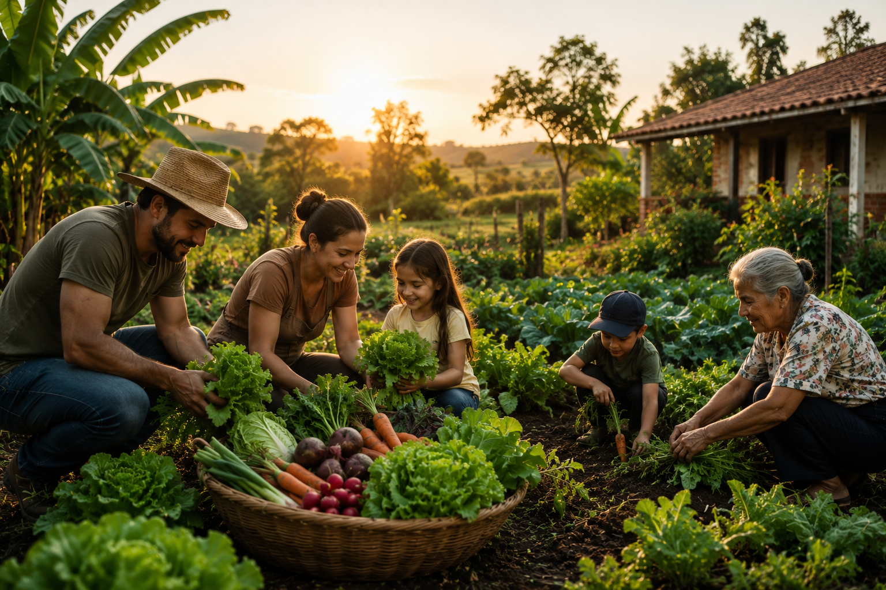
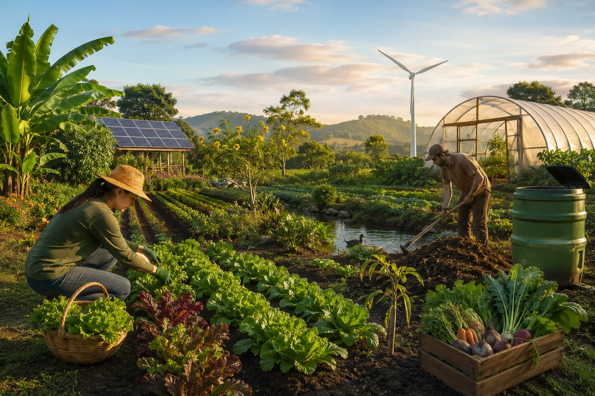
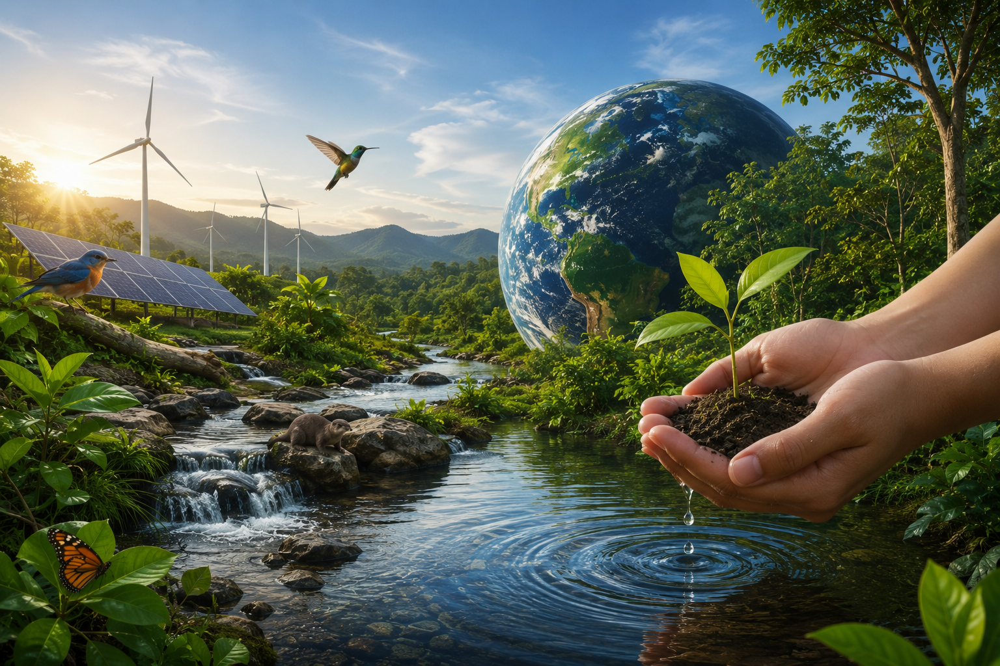

Agricultura Familiar e Sustentável: Produzindo Alimentos e Preservando o Futuro
Conheça a importância da agricultura familiar para a alimentação, economia e conservação ambiental.
Panorama da Agricultura Familiar
Galeria Educativa



Diagnóstico
Conheça os principais desafios e oportunidades da agricultura familiar.
Impactos da Agricultura Familiar
Do Campo à Mesa
🌱 Plantio
💧 Cultivo
🚜 Colheita
📦 Distribuição
🍎 Consumo
Quiz Interativo
Teste seus conhecimentos.
Pontuação: 0
Casos de Sucesso
Soluções Sustentáveis
Pesquisar Conteúdo
Perguntas Frequentes
Como você pode apoiar a agricultura sustentável?
Valorize produtores locais, reduza desperdícios e incentive práticas sustentáveis.
Assumir Compromisso